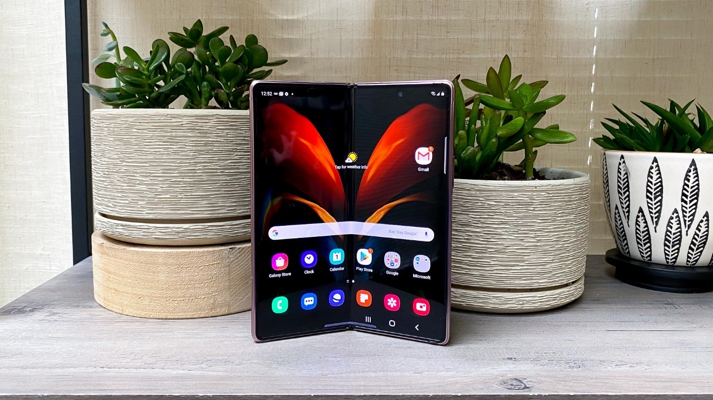
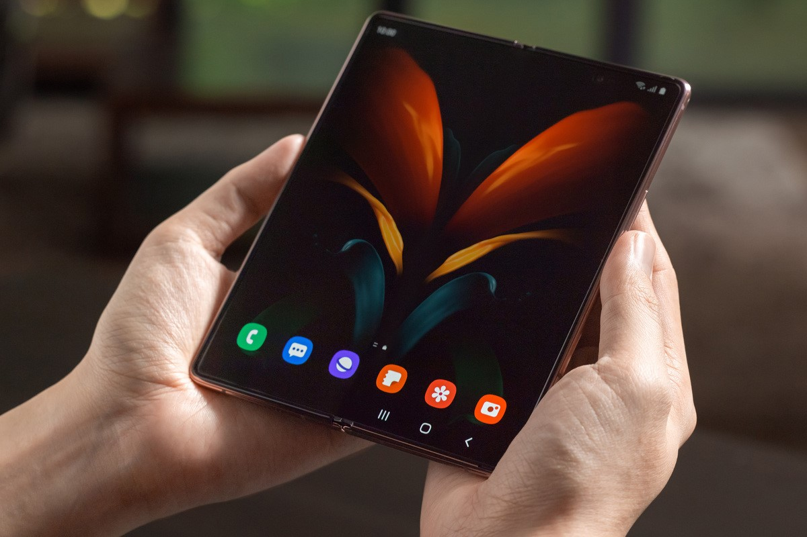
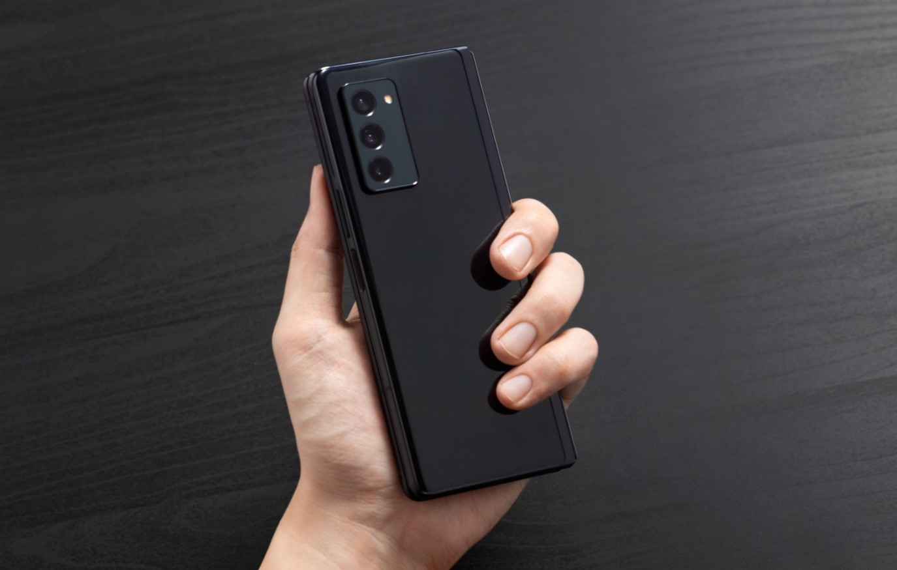
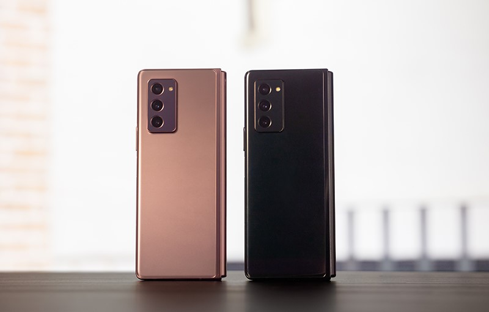

Màn hình:
Chính: Dynamic AMOLED, Phụ: Super AMOLEDChính 7.59" & Phụ 6.23"Full HD+
Hệ điều hành:
Android 10
Camera sau:
3 camera 12 MP
Camera trước:
Trong 10 MP & Ngoài 10 MP
Chip:
Snapdragon 865+
RAM:
12 GB
Bộ nhớ trong:
256-512GB
SIM:
1 Nano SIM & 1 eSIM, Hỗ trợ 5G
Pin, Sạc:
4500 mAh, 25 W
Samsung là thương hiệu điện thoại thông minh không còn xa lạ trên thị trường. Trong những năm qua, bên cạnh việc nghiên cứu phát triển hai dòng flagship Galaxy S và Galaxy Note, Samsung cũng bắt đầu mở rộng hệ sinh thái các sản phẩm của họ. Những người hâm mộ thiết bị công nghệ nhà Samsung có thể sở hữu thêm tai nghe Galaxy Buds, máy tính bảng Galaxy Tab S… Năm 2019, Samsung chính thức trình làng siêu phẩm làm chấn động cộng đồng người yêu công nghệ. Galaxy Fold là chiếc điện thoại đầu tiên trên thế giới sở hữu thiết kế có thể gập lại. Sau thành công đó, Samsung tiếp tục trình làng “người kế nhiệm” hoàn thiện hơn. Hãy cùng Hoàng Hà Mobile khám phá lý do những người yêu công nghệ không thể rời mắt khỏi chiếc Galaxy Z Fold2.
Sau thành công của Galaxy Fold vào năm 2019, Samsung đã trở lại với một Galaxy Z Fold 2 hoàn hảo đến từng chi tiết thiết kế. “Người kế nhiệm” của Galaxy Fold vẫn được giữ nguyên ngôn ngữ thiết kế gập như thế hệ cũ, nhưng nó được hoàn thiện từ chất liệu cao cấp hơn. Phần khung nhôm với các góc vuông vức mang lại cảm giác chắc chắn, nam tính hơn khi cầm trên tay. Đây cũng là một trong những lý do chiếc Galaxy Z Fold2 chính hãng thu hút các đối tượng khách hàng nam, không chỉ vì tính tiện lợi trong quá trình sử dụng mà còn có thể khẳng định đẳng cấp khác biệt. Galaxy Z Fold2 5G có trọng lượng chỉ khoảng 282g đem đến trải nghiệm vô cùng thoải mái khi cầm trên tay và sử dụng.
Bên cạnh thiết kế, Samsung Galaxy Z Fold2 chính hãng cũng được cải thiện đáng kể phần màn hình hiển thị. Samsung đã thay thế bằng tấm nền Ultra Thin Glass cho trải nghiệm màn hình cứng cáp hơn. Phần bản lề của máy đã cải thiện các vấn đề từ thế hệ trước, tăng thêm mức độ ổn định trong mỗi lần gập mở. Chiếc Galaxy Z Fold2 chính hãng sở hữu màn hình chính 7.59 inch Dynamic AMOLED và màn hình phụ 6.23 inch Super AMOLED với độ phân giải Full HD+ cho hình ảnh hiển thị sắc nét và sống động vô cùng. Samsung thực sự đã cải thiện các vấn đề màn hình sau những phản hồi từ trải nghiệm thực tế của khác hàng.
Với thiết kế sang trọng, đẳng cấp, Galaxy Z Fold2 5G chính hãng còn sở hữu hệ thống camera hiện đại. Trong đó bao gồm cụm 3 camera sau với thiết kế đặt dọc trong một mô-đun hình chữ nhật: camera góc rộng, camera góc siêu rộng và camera tele hỗ trợ zoom xa 2x đều hỗ trợ độ phân giải 12MP. Nhờ đó, bộ 3 camera cho chất lượng ảnh sắc nét đến từng chi tiết, từ các góc chụp siêu rộng đến những khung hình cận cảnh đầy nghệ thuật.
Bên cạnh đó, Galaxy Z Fold2 5G chính hãng còn được trang bị thêm camera selfie 10MP cho các tác vụ chụp hình, gọi điện video cực đơn giản. Điện thoại cũng hỗ trợ chụp ảnh trong điều kiện thiếu sáng nhờ công nghệ tiên tiến được Samsung phát triển. Hệ thống camera trên Galaxy Z Fold2 5G chính hãng đã được hoàn thiện đáng kể, hứa hẹn đem lại những bức ảnh với chất lượng tuyệt vời.
Điện thoại Samsung Galaxy Z Fold2 chính hãng được trang bị bộ vi xử lý Qualcomm Snapdragon 865 + X55 cho hiệu năng ổn định khi hoạt động trên cả hai màn hình. Điện thoại đi kèm với RAM 12GB có thể lưu trữ thông tin từ học tập, công việc đến giải trí. Hệ thống từ Samsung cho phép Galaxy Z Fold2 5G hoạt động trên cả hai màn hình như một chiếc tablet. Bạn có thể trải nghiệm chơi game, làm việc cực mới lạ trên cả hai màn hình nhưng không hề ảnh hưởng đến thao tác của người dùng.
Galaxy Z Fold2 5G chính hãng sở hữu viên pin 4500mAh khá lớn, phục vụ tối đa cho nhu cầu sử dụng liên tục của đa số người dùng hiện nay. Chiếc điện thoại gập này hiện đang chạy trên hệ điều hành Android 10 và hỗ trợ kết nối 5G cực nhanh. Một số tính năng khác như Galaxy Z Fold 2 5G chính hãng sở hữu hệ thống loa cho âm thanh lớn và chất âm sắc nét. Chiếc Galaxy Z Fold2 5G chính hãng có sẵn tùy chọn màu đen và màu vàng hồng. Đặt mua tại Hoàng Hà Mobile để nhận được mức giá tốt nhất cùng nhiều ưu đãi đặc biệt. Tham khảo thêm thông tin sản phẩm tại đây: https://hoanghamobile.com/dien-thoai-di-dong/samsung-galaxy-z-fold2-5g-chinh-hang